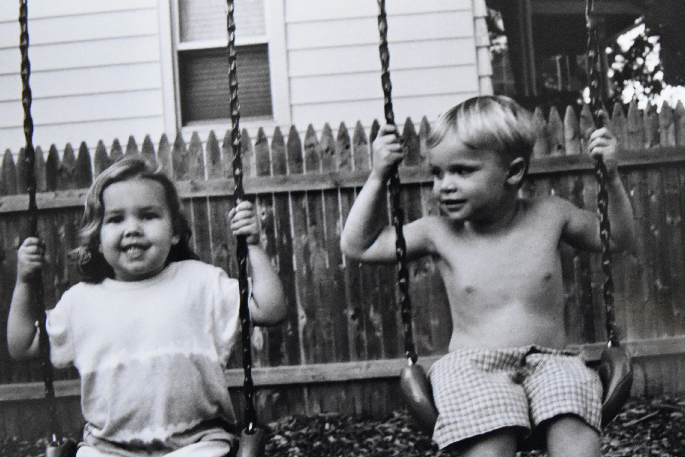

<!doctype hmtl>

<hmtl>

    <head>
        <title>L and S</title>
        <link rel="stylesheet" href="css/fifthpage.css">
    </head>
    
    <body>
        <h2>Liam and Seamus</h2>
        <p>Growing up as an only child just meant becoming closer with my cousins. My cousins, Liam and Seamus, acted as the brothers I never had. We were practically inseperbale when we were little, like the Three Musketeers. There was at least one summer were we saw each other every single day. Most of my childhood memories involve them.</p>
        
        <div class="image1">
        
        </div>
        
        <div class="image2">
        
        </div>
    
    
    
    </body>
        